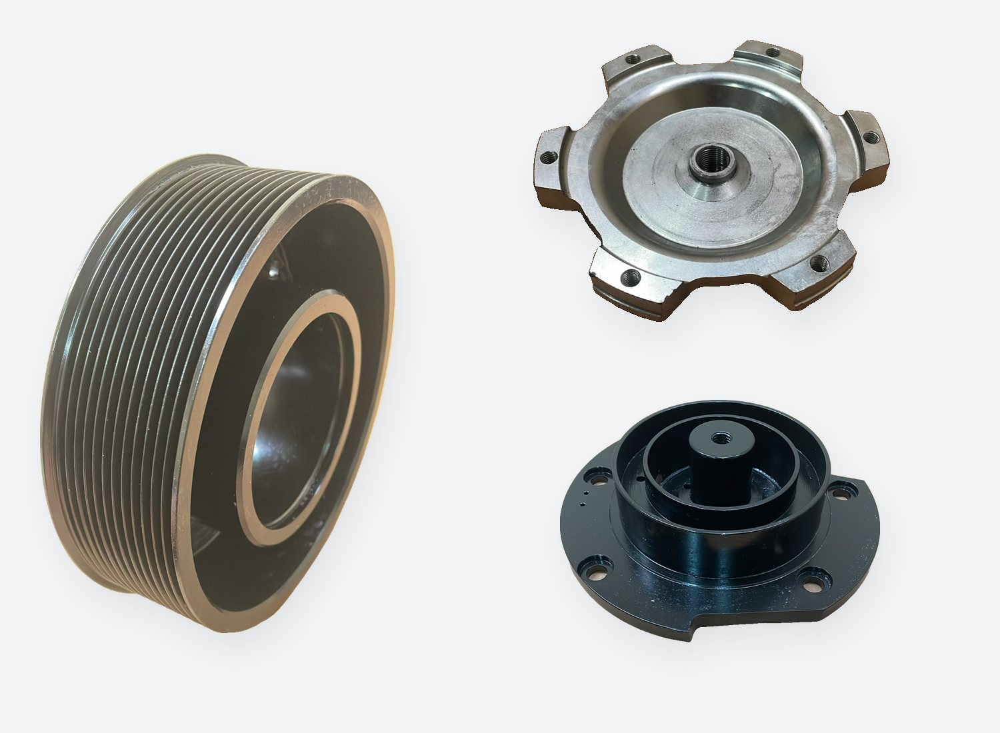

Nedva Makine; otomotiv yedek parçaları, makine üreticilerine özel parçalar ve endüstriyel mutfak makineleri yedek parçalarını numune veya teknik resim üzerinden imal etmektedir.
Faaliyet Alanlarımız Teklif İsteyin
Nedva Makine, 2007 yılında Konya'da kurulmuştur. Firmamız otomotiv yedek parçalarının fason imalatı, makine üreticilerine özel parçaların fason imalatı ve endüstriyel mutfak makineleri yedek parça imalatı alanlarında faaliyet göstermektedir.
Müşterilerimizin numune, teknik resim veya ölçü bilgilerine göre tahrik, yataklama ve bağlantı sistemlerinde kullanılan parçaları imal ediyoruz. Piyasada temin edilemeyen veya üretimi durmuş parçalar, mevcut numune ölçülerek yeniden üretilebilmektedir.
Çalışmalarımızı ölçüye uygunluk, zamanında teslim ve müşterilerimizle uzun süreli iş birliği ilkeleriyle sürdürmekteyiz.
Firma adımız, Ahilik geleneğinde esnafta aranan beş özelliğin baş harflerinden oluşur. Cömertlik, tevazu ve doğruya yönelme anlayışını işimizin temeli olarak kabul ediyoruz.
Tek parçadan seri üretime kadar, ihtiyaç duyulan parçayı numune veya teknik resme uygun olarak imal ediyoruz.
Otomotiv yan sanayi ve yedek parça firmaları için teknik resim veya numuneye göre fason parça imalatı.
Makine üreten firmaların kendi tasarımlarına ait, firmaya özel parçaların fason imalatı.
Endüstriyel mutfak makinelerinde kullanılan yedek parçaların imalatı; üretimi durmuş parçaların numuneden yeniden üretimi.
Aşınmış veya kırılmış parçanın ölçüleri alınarak aynı ölçülerde yeni parça üretilir.
Müşteriden gelen teknik resim veya çizime göre parça imal edilir.
Düzenli ihtiyaç duyulan parçalar, belirlenen adet ve termin planına göre seri olarak üretilir.
Aşağıdaki parçalar firmamızda üretilmiş örneklerdir. Listede bulunmayan parçalar için numune veya teknik resim ile teklif alabilirsiniz.
Ölçü, malzeme ve adet bilgisi ile birlikte iletilen talepler için fiyat ve termin bilgisi verilmektedir.
Parça talepleriniz için telefonla arayabilir veya WhatsApp üzerinden parça fotoğrafı ve ölçülerini gönderebilirsiniz.